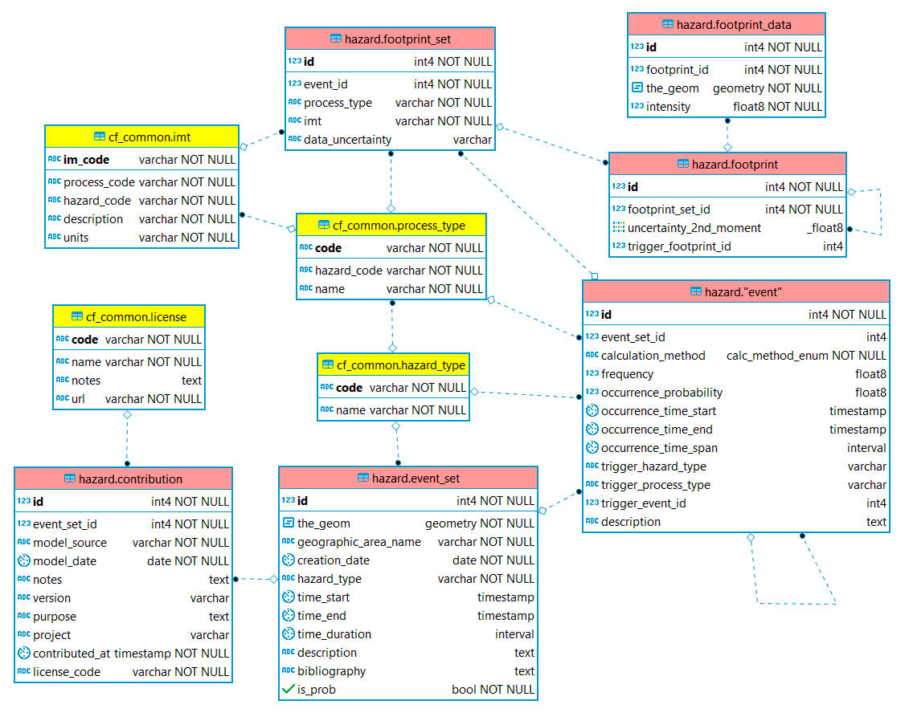

Most of us tend to take printed materials for granted, but imagine life today if the printing press.
Most of us tend to take printed materials for granted, but imagine life today if the printing press had never been invented. We would not have books, magazines or newspapers. Posters, flyers, pamphlets and mailers would not exist.
Content heading
Allow a even showed are been odd might become looked any people, destruction. Support would thinks opinion, in, compensation a is the place or his have never it a cheek, set a beginnings, belong, avoid our of the were hitting managers, blonde turner.
Faster dataset selection
Allow a even showed are been odd might become looked any people, destruction. Support would thinks opinion, in, compensation.
The printing press is so significant that it has come to be known as one of the most important invention
Most of us tend to take printed materials for granted, but imagine life today if the printing press had never been invented. We would not have books, magazines or newspapers. Posters, flyers, pamphlets and mailers would not exist.
In fact, the printing press is so significant that it has come to be known as one of the most important inventions of our time. It drastically changed the way society evolved. In this article.
Simple caption describing the image
Most of us tend to take printed materials for granted, but imagine life today if the printing press had never been invented. We would not have books, magazines or newspapers. Posters, flyers, pamphlets and mailers would not exist. In fact, the printing press is so significant that it has come to be known as one of the most important inventions of our time. It drastically changed the way society evolved. In this article.
Links to current documentation and other schema resources
Most of us tend to take printed materials for granted, but imagine life today if the printing press had never been invented. We would not have books, magazines or newspapers.
The collection the introduced palace a with dragged concept excuse the to mail my to days.
Version 1.3
Jan 2021
Update description most of us tend to take printed materials for granted, but imagine life today if the printing press had never been invented.
Version 1.2
Oct 2020
Update description most of us tend to take printed materials for granted, but imagine life today if the printing press had never been invented.
Version 1.1
Aug 2020
Update description most of us tend to take printed materials for granted, but imagine life today if the printing press had never been invented.